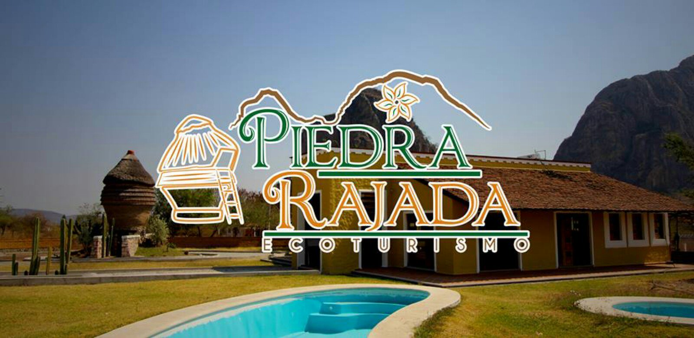
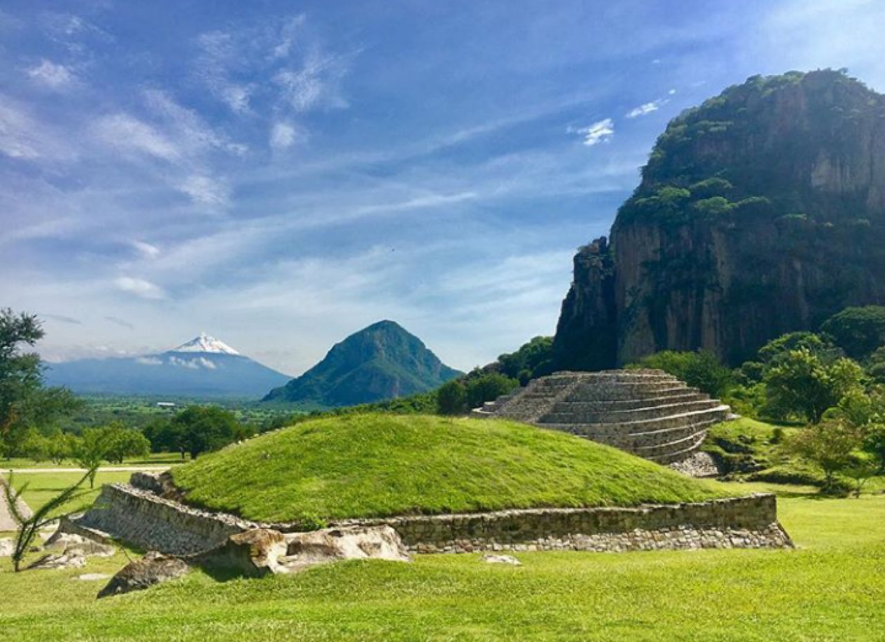

Hermoso paisaje del pueblo
Fotografía mediante dron

Encuentro con la naturaleza
Parque Ecoturístico Piedra Rajada, en Chalcatzingo

Paisajes inigualables
Zona arqueológica de Chalcatzingo
Relieves con historia
Cerros de Chalcatzingo
Tranquilidad y paz
Kiosko de Chalcatzingo
Chalcatzingo es cultura
Chinelos, una tradición morelense